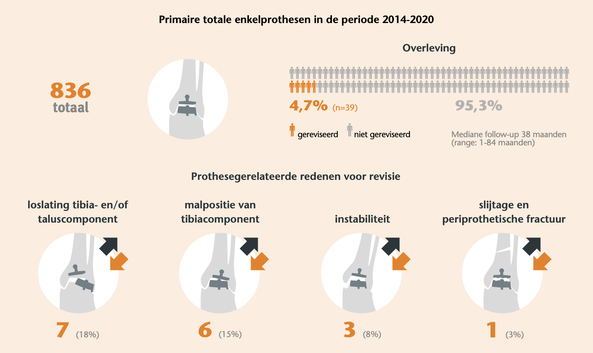

Wat is een enkelprothese?
De enkel (door artsen ook wel het bovenste spronggewricht genoemd) bestaat uit het scheenbeen, het kuitbeen en het sprongbeen. Tijdens de operatie worden de beschadigde gewrichtsoppervlakken (het aangedane kraakbeen en bot) aan de onderzijde van het scheenbeen en de bovenzijde van het sprongbeen verwijderd. Daarvoor komen metalen onderdelen en een kunststof glijvlak in de plaats. De precieze vorm en bevestiging verschillen per type prothese.
Het doel is de pijn uit het aangedane enkelgewricht te verminderen en tegelijkertijd een deel van de beweging te behouden. De operatie herstelt geen gezond kraakbeen en maakt van een aangedane enkel geen normale enkel. Ook andere oorzaken van pijn rond voet en enkel verdwijnen niet vanzelf door het vervangen van dit ene gewricht.

Wanneer komt een enkelprothese in beeld?
Een enkelprothese wordt meestal pas besproken bij vergevorderde artrose van het bovenste spronggewricht. Daarbij gaat het niet alleen om wat op de foto te zien is. De pijn en beperkingen moeten ook belangrijk genoeg zijn: bijvoorbeeld een sterk afgenomen loopafstand, moeite met dagelijks werk of steeds terugkerende pijn ondanks passende niet-operatieve zorg.
Voor die tijd kunnen onder meer aanpassing van belasting, pijnstilling via de eigen behandelaar, fysiotherapie, een brace, schoenaanpassing of soms een injectie worden overwogen. Welke maatregel zinvol is, hangt af van de oorzaak, stand en klachten. Meer algemene informatie hierover staat op de pagina over artrose van de enkel.

Een prothese is geen automatische volgende stap wanneer deze maatregelen onvoldoende helpen. Eerst moet duidelijk zijn dat het enkelgewricht zelf de belangrijkste bron van de klachten is en dat de voordelen van een operatie opwegen tegen de herstelbelasting en risico's.
Ernstige artrose op een röntgenfoto zonder passende klachten is niet genoeg. Andersom kan een pijnlijke, scheefstaande of instabiele enkel aanvullende correcties vragen voordat een prothese technisch en functioneel logisch is.
Welke beeldvorming is nodig?
Staande röntgenfoto's zijn meestal het uitgangspunt. Ze laten de gewrichtsspleet, extra botvorming en de stand van de enkel onder belasting zien. Soms worden aanvullende foto's van de voet of achtervoet gemaakt om de stand en de omliggende gewrichten beter te beoordelen.
Een CT-scan is niet altijd nodig, maar kan meer informatie geven over cysten, botverlies, oude breuken en de driedimensionale vorm van het bot. Bij sommige moderne prothesesystemen worden de CT-beelden ook gebruikt om de operatie driedimensionaal te plannen. Op basis van die planning kunnen patiëntspecifieke zaagmallen of richtinstrumenten worden gemaakt. Dit wordt patient-specific instrumentation (PSI) genoemd.
PSI helpt om de geplande botzaagsneden en positie van de prothese tijdens de operatie terug te vinden. Het is een technisch hulpmiddel en geen garantie op een betere uitkomst. Een MRI-scan is bij de gebruikelijke planning van een enkelprothese meestal geen standaardonderzoek, maar kan soms zinvol zijn als ook andere oorzaken van klachten of de weefsels eromheen moeten worden beoordeeld. Beeldvorming ondersteunt de afweging, maar bepaalt nooit op zichzelf welke behandeling past.
Wat bepaalt of een enkelprothese kan passen?
De keuze is maatwerk en wordt samen met de orthopedisch chirurg gemaakt. Daarbij worden de medische mogelijkheden en risico's naast de persoonlijke doelen en verwachtingen gelegd. Onderstaande factoren zijn geen losse afvinklijst. Ze beïnvloeden elkaar en kunnen ook bepalen welke aanvullende ingrepen nodig zijn.
Een forse scheefstand of instabiliteit kan de belasting op de prothese ongelijk maken. Soms is correctie mogelijk; soms past een andere behandeling beter.
De onderdelen hebben voldoende steun nodig. Botverlies, cysten, oude breuken of eerdere operaties kunnen plaatsing ingewikkelder maken. Een CT-scan kan hierover aanvullende informatie geven.
Littekens, dunne huid, slechte wondgenezing, doorbloeding en de toestand van spieren en pezen wegen mee in het infectie- en wondrisico.
Dagelijks lopen en fietsen stellen andere eisen dan zwaar lichamelijk werk, springen of intensieve contactsport. Belasting beïnvloedt ook de levensduur.
Artrose of een eerdere artrodese onder of naast de enkel kan bewegingsbehoud extra waardevol maken, maar kan ook een eigen bron van pijn blijven.
Onder meer roken, diabetes, zenuwschade, vaatproblemen, infecties, lichaamsgewicht, medicatie en valrisico kunnen de keuze en het herstel beïnvloeden.
Leeftijd speelt mee, maar een vaste leeftijdsgrens geeft te weinig informatie. Biologische gezondheid, bot, activiteiten, levensverwachting, herstelmogelijkheden en bereidheid om met beperkingen rekening te houden zijn minstens zo belangrijk.
Waarom past bij de ene patiënt een prothese en bij de andere een artrodese?
Een artrodese was lange tijd de gebruikelijke standaardoperatie bij ernstige enkelartrose. Door verbeteringen in protheseontwerp, operatietechniek en patiëntselectie worden enkelprothesen de laatste jaren weer vaker geplaatst. Tegenwoordig gelden artrodese en enkelprothese beide als mogelijke behandelingen. Welke operatie het meest passend is, hangt af van de enkel, de gezondheid, de belasting en de doelen van de patiënt.
Bij een artrodese worden scheenbeen en sprongbeen aan elkaar vastgezet. De pijnlijke beweging in het gewricht verdwijnt dan, maar ook de beweging in dat gewricht. Bij een prothese wordt een deel van die beweging behouden, met als keerzijde dat er kunstmateriaal aanwezig is dat kan slijten, loslaten of een nieuwe operatie nodig kan maken.
Een artrodese kan bijvoorbeeld logischer zijn als stabiele plaatsing van een prothese niet goed mogelijk is door ernstig botverlies, forse instabiliteit, problemen met huid of weke delen, infectierisico of bij zeer actieve mensen die de enkel naar verwachting zwaar blijven belasten. Bij zo'n zeer hoge mechanische belasting wordt een enkelprothese vaak afgeraden. Een prothese kan juist aantrekkelijker zijn als bewegingsbehoud belangrijk is, bijvoorbeeld doordat gewrichten rond de enkel al stijf of aangedaan zijn. Dit zijn richtingen, geen beslisregels.
Ook binnen beide behandelingen bestaan technische varianten. De echte vergelijking gaat daarom niet alleen over ‘bewegen of vastzetten’, maar over de kans op pijnvermindering, de hele voetstand, herstel, belasting, toekomstige operaties en wat iemand in het dagelijks leven wil kunnen.
De gerandomiseerde TARVA-studie vergeleek 303 patiënten van 50 tot 85 jaar die voor beide operaties geschikt waren. De belangrijkste uitkomstmaat was de verandering na één jaar op het onderdeel lopen en staan van de Manchester–Oxford Foot Questionnaire, een vragenlijst waarin patiënten zelf aangeven hoeveel problemen zij daarbij ervaren. Beide groepen verbeterden. Het gemiddelde verschil tussen een enkelprothese en artrodese was niet statistisch significant.
Het type complicaties verschilde. Na een enkelprothese kwamen wondgenezingsproblemen vaker voor dan na een artrodese (13,4% tegenover 5,7%), evenals zenuwletsel (4,2% tegenover minder dan 1%). Na een artrodese kwamen trombose of longembolie iets vaker voor (4,9% tegenover 2,9%). Bij 12,1% van de artrodeses was op de röntgenfoto geen volledige botvastgroei zichtbaar; 7,1% van de patiënten had daar ook klachten van. Deze resultaten beschrijven alleen het eerste jaar na de operatie en geven geen antwoord op de uitkomsten op langere termijn.
Wat betekent ‘beweging behouden’ in de praktijk?
De prothese beweegt meestal minder ruim dan een gezonde enkel. Hoeveel beweging bruikbaar is, hangt ook af van stijfheid vóór de operatie, littekenweefsel, pezen, kuitspieren en de gewrichten in de achtervoet. Bewegingsbehoud moet daarom functioneel worden uitgelegd.
Enige enkelbeweging kan de afwikkeling vloeiender maken. Ongelijke ondergrond en lange afstanden kunnen toch lastig blijven.
Vooral trap af vraagt buiging van de enkel. Dat kan verbeteren, maar een leuning of aangepast patroon kan nodig blijven.
Fietsen is voor veel mensen een realistisch doel omdat de enkel gecontroleerd en zonder schokbelasting beweegt. Op- en afstappen telt ook mee.
Diep hurken vraagt veel enkelbuiging en blijft vaak beperkt. Knielen wordt ook beïnvloed door knie, heup en balans.
Wandelen, fietsen, zwemmen en soms rustig fitnessen passen meestal beter dan springen, contactsport of herhaalde impact.
Een goede uitkomst kan zijn: minder pijn, bruikbare beweging en meer dagelijkse activiteit. Dat kan samengaan met blijvende stijfheid, aangepast lopen en grenzen bij sport.
In een kleine vergelijkende bewegingsstudie met twintig patiënten hadden mensen met een enkelprothese tijdens lopen en traplopen meer enkelbeweging en afzetkracht dan mensen na een artrodese. Door de kleine onderzoeksgroep illustreert dit vooral het mogelijke biomechanische verschil; het voorspelt niet hoeveel verbetering een individuele patiënt ervaart.
Hoeveel restpijn en zwelling kan blijven bestaan?
Het belangrijkste doel is meestal duidelijke vermindering van de artrosepijn. Volledig pijnvrij worden kan niet worden beloofd. Restpijn kan komen uit het geopereerde gebied, littekenweefsel, pezen, zenuwen, een niet optimaal gebalanceerde enkel of artrose in gewrichten eromheen. Soms is op beeldvorming geen eenvoudige verklaring voor aanhoudende pijn te vinden.
Zwelling is in de eerste maanden normaal en kan aan het einde van de dag toenemen. Ook na zes tot twaalf maanden kan de enkel bij veel lopen, warmte of lang staan nog dikker worden. De hoeveelheid verschilt per persoon. Een blijvend fors rode, warme of toenemend pijnlijke enkel hoort niet simpelweg als ‘normaal herstel’ te worden beschouwd en vraagt beoordeling via het behandelteam.
Hoe verloopt de operatie in hoofdlijnen?
Voor de operatie worden klachten, stand, stabiliteit en beeldvorming beoordeeld. Meestal zijn staande röntgenfoto's nodig; soms volgt een CT-scan voor bot, stand of planning. Vooraf worden gezondheid, medicatie, wondrisico en de praktische thuissituatie besproken.
Tijdens de operatie worden de beschadigde gewrichtsoppervlakken voorbereid en de onderdelen in het scheenbeen en sprongbeen geplaatst. Soms zijn aanvullende ingrepen nodig, bijvoorbeeld aan banden, pezen, het kuitbeen, de achillespees of de stand van voet en enkel. Daardoor is de ene enkelprothese-operatie niet gelijk aan de andere.
Na de operatie volgen wondcontrole, bescherming met gips, spalk of walker en een stapsgewijze opbouw van belasting en beweging. Trombosepreventie en pijnstilling worden afgestemd op de persoonlijke situatie en het lokale protocol.
Waarom verschillen gips- en belastingsschema's per ziekenhuis?
Gips-, belastings- en mobilisatieschema's kunnen per behandelcentrum verschillen. Dat is niet automatisch een tegenspraak. Het moment van belasten en bewegen hangt onder meer af van het type prothese, de manier van bevestigen, botkwaliteit, wond, zwelling, aanvullende correcties en ervaring van het behandelteam. Ook definities verschillen: ‘belasten’ kan aantippend, gedeeltelijk of volledig belasten betekenen, al dan niet in een walker.
In een kleine gerandomiseerde studie bij twintig patiënten werden vroege mobilisatie en zes weken immobilisatie met elkaar vergeleken. Na twee jaar waren geen duidelijke verschillen gevonden. Omdat slechts één type mobile-bearing-prothese werd onderzocht, levert deze studie geen algemeen revalidatieschema op. Zij onderstreept vooral waarom prothese, operatie en aanvullende ingrepen bij de keuze van een protocol moeten worden meegewogen.
Een algemeen internetschema is daarom nooit leidend boven de persoonlijke instructies na een operatie. Te vroeg meer doen kan wond of bot belasten; onnodig lang stilhouden kan stijfheid en spierverlies versterken. Vraag bij onduidelijkheid expliciet hoeveel gewicht je mag geven, wanneer de walker af mag en welke bewegingen wel of niet zijn toegestaan.
Hoe ziet herstel er realistisch uit?
Onderstaande tijdlijn is een oriëntatie, geen persoonlijk revalidatieschema. Aanvullende ingrepen of complicaties kunnen het verloop duidelijk veranderen. Het herstel gaat bovendien zelden in een rechte lijn: een actievere dag kan tijdelijk meer pijn of zwelling geven.
De wond en zwelling staan centraal. Het been ligt vaak veel omhoog. Verplaatsen gebeurt met hulpmiddelen en volgens een strikt belastingsadvies.
Er volgt vaak een controle met röntgenfoto. Afhankelijk van wond, bot en eventuele extra ingrepen kan belasting of beweging verder worden opgebouwd.
Lopen en spierfunctie nemen meestal toe, maar de enkel is vaak nog stijf en gezwollen. Lang staan, een volledige werkdag en grotere afstanden kunnen nog te veel zijn.
Dagelijkse activiteiten zijn vaak beter te beoordelen. Kracht, balans, looppatroon en duurbelasting kunnen nog verder verbeteren; restzwelling is niet ongewoon.
Dan is een stabieler beeld van pijn, beweging en functioneren mogelijk. Kleine veranderingen kunnen doorgaan, maar blijvende beperkingen worden duidelijker.
Welke risico's horen bij een enkelprothese?
Algemene operatierisico's zijn onder meer wondproblemen, infectie, trombose, nabloeding, zenuwirritatie en complicaties van verdoving. Bij een enkelprothese spelen daarnaast breuk van bot rond de prothese, verkeerde stand, instabiliteit, aanhoudende pijn, beperkte beweging, slijtage van het kunststof, botreacties, verzakking of loslating.
Een complicatie betekent niet altijd dat de hele prothese moet worden vervangen. Soms volstaat behandeling van de wond, verwijdering van extra bot, vervanging van een kunststof onderdeel of correctie van stand of stabiliteit. Bij een diepe infectie of duidelijke loslating kan een veel grotere operatie nodig zijn.
Wat laten Nederlandse registergegevens over vroegtijdig falen zien?
De Landelijke Registratie Orthopedische Interventies (LROI) verzamelt gegevens over gewrichtsprothesen die in Nederland worden geplaatst. Een eerdere analyse van deze registratie volgde 836 primaire enkelprothesen die tussen 2014 en 2020 waren geregistreerd. Niet iedereen werd even lang gevolgd: bij de helft was dit maar ongeveer drie jaar en bij de andere helft langer. In totaal was bij 39 prothesen (4,7%) een nieuwe operatie nodig waarbij een onderdeel werd vervangen of verwijderd. Een nieuwe operatie was in deze groep vaker nodig bij jongere patiënten, bij mensen met een hogere BMI en bij patiënten die al eerder waren geopereerd vanwege schade aan kraakbeen en bot in de enkel.
Dit zijn verbanden op groepsniveau uit observationele registergegevens. Het waren 39 revisies, de follow-up verschilde per patiënt en een verband bewijst niet dat een factor de oorzaak is. De uitkomsten zijn daarom geen persoonlijke voorspelling en geen losse uitsluitingscriteria. Leeftijd, lichaamsgewicht en eerdere operaties worden samen met onder meer stand, botkwaliteit, activiteit en omliggende weefsels beoordeeld.

Hoe lang gaat een enkelprothese mee?
Een enkelprothese heeft geen vaste houdbaarheidsdatum. Onderzoekers spreken meestal over protheseoverleving: de kans dat na een bepaald aantal jaren nog geen revisie heeft plaatsgevonden.
Veel studies bepalen de levensduur van een enkelprothese aan de hand van revisies. Bij een revisie wordt minstens één onderdeel van de prothese vervangen, verwijderd of toegevoegd. Een nieuwe operatie waarbij de prothese zelf blijft zitten, telt daardoor meestal niet mee in het overlevingspercentage. Zo kunnen botcysten, holtes in het bot rond de prothese, worden schoongemaakt en opgevuld zonder dat een onderdeel wordt vervangen. Of zulke heroperaties afzonderlijk worden vermeld, verschilt per onderzoek. Een overleving van bijvoorbeeld 90% betekent daarom niet automatisch dat 90% van de patiënten geen klachten of andere operaties heeft gehad.
In grote Britse en Australische registers was na tien jaar ongeveer 86 tot 90% van de enkelprothesen nog niet gereviseerd. Een systematische review van acht langetermijnstudies vond bij minimaal tien jaar follow-up een bredere protheseoverleving van 66 tot 94,4%. Die spreiding komt onder meer door verschillen in implantaten, periode van plaatsing, patiëntselectie en de definitie van falen. De Nederlandse registratie biedt op dit moment vooral informatie over de middellange termijn en geen algemeen Nederlands getal voor tien of vijftien jaar.
De levensduur hangt onder meer samen met het gebruikte implantaat, stand en stabiliteit, botkwaliteit, eerdere operaties, infectie, aanvullende correcties en mechanische belasting. Vijfjaarscijfers mogen daarom niet eenvoudig worden doorgerekend naar tien of vijftien jaar.
In grote hedendaagse registers zijn na tien jaar ongeveer acht tot negen van de tien enkelprothesen nog niet gereviseerd. Dat betekent niet dat al deze enkels volledig pijnvrij zijn. Sommige prothesen vragen eerder een nieuwe behandeling; andere functioneren veel langer.
Hoe groot is de kans op een nieuwe ingreep, loslating of omzetting naar artrodese?
Eén betrouwbaar percentage voor iedere patiënt bestaat niet. Onderzoeken gebruiken verschillende prothesen, follow-upduur en uitkomstmaten. ‘Revisie’ betekent meestal dat een onderdeel wordt vervangen of verwijderd; kleinere heroperaties en aanhoudende pijn kunnen daar buiten vallen.
In een gepubliceerd Nederlands LROI-registeronderzoek uit 2024 was het geschatte revisiepercentage na vijf jaar 3,3% bij fixed-bearing-prothesen en 10,4% bij mobile-bearing-prothesen. Dit zijn observationele groepsgemiddelden met middellange follow-up, geen persoonlijke voorspelling en geen bewijs dat iedere fixed-bearing-prothese beter is dan iedere mobile-bearing-prothese. Langere follow-up en verdere registratie blijven nodig.
Als een prothese faalt, kunnen opties bestaan uit vervanging van één of meer onderdelen, botopbouw, behandeling van infectie of omzetting naar een artrodese. Zo'n omzetting is doorgaans complexer dan een primaire artrodese, omdat er botverlies kan zijn na verwijdering van de prothese. De mogelijkheid van een latere operatie hoort daarom al bij de eerste afweging.
Onderzoek naar operaties na een gefaalde enkelprothese is onderling sterk verschillend. Een systematische review en meta-analyse laat zien dat zowel revisie naar een nieuwe prothese als omzetting naar een artrodese soms door nog een ingreep wordt gevolgd. Deze studies gaan alleen over prothesen die al waren gefaald en kunnen daarom niet als persoonlijk risico vóór een eerste enkelprothese worden gebruikt.
Welke enkelprothesen werden in 2025 in Nederland geregistreerd?
Volgens de LROI werden in 2025 213 primaire enkelprothesen geregistreerd: 180 fixed-bearing en 33 mobile-bearing. In de afzonderlijke tabel met prothesenamen zijn 208 ingrepen aan een systeem gekoppeld. De percentages hieronder zijn op die 208 ingrepen gebaseerd.
Fixed-bearing · 165 ingrepen.
Mobile-bearing · 17 ingrepen.
Mobile-bearing · 11 ingrepen.
Fixed-bearing · 11 ingrepen.
Mobile-bearing · 3 ingrepen.
Fixed-bearing · 1 ingreep.
Bij een fixed-bearing prothese zit het kunststof glijvlak vast aan het onderdeel in het scheenbeen. Bij een mobile-bearing prothese kan dit glijvlak daarnaast bewegen tussen de metalen onderdelen. De Nederlandse registratie laat zien dat fixed-bearing systemen in 2025 het meest werden gebruikt. Dat maakt het meest gebruikte systeem niet automatisch het beste systeem voor iedere patiënt.
Bekijk de actuele cijfers bij de LROI-jaarrapportage over enkelprothesen.
* Voor de Hintermann Series H3, voorheen HINTEGRA, publiceerde de FDA in juni 2026 een waarschuwing over een hoger dan verwacht risico op langetermijnfalen en revisie. In Australië mag het systeem sinds 5 mei 2026 niet meer worden verkocht. De FDA adviseert geen preventieve verwijdering van een goed functionerende prothese.
Werk, autorijden, schoenen en sport
Terugkeer naar werk hangt af van reistijd, mogelijkheid om het been hoog te leggen en de lichamelijke belasting. Beeldschermwerk kan eerder haalbaar zijn dan staand werk, veel lopen, klimmen of tillen. Wanneer werkhervatting haalbaar is, moet daarom per persoon en soort werk worden beoordeeld.
Autorijden kan pas wanneer je veilig en krachtig een noodstop kunt maken, geen beperkend gips of walker meer draagt, geen medicatie gebruikt die rijden onveilig maakt en toestemming past bij het behandeladvies en de verzekeringsvoorwaarden. Bij een rechterenkel is dat meestal later dan bij een linkerenkel in een automaat.
Schoenen moeten ruimte bieden voor zwelling en een stabiele afwikkeling. Voor sport ligt de nadruk meestal op activiteiten met minder schokbelasting. Een prothese wordt niet geplaatst om onbeperkt te kunnen hardlopen of springen; persoonlijke doelen horen vóór de operatie besproken te worden.
Een systematische review en meta-analyse vond dat terugkeer naar sport na een enkelprothese mogelijk is, vooral naar fietsen, zwemmen, wandelen en fitness. De onderzoeken waren echter uiteenlopend en intensieve impactsport kwam weinig voor. Het bewijs is daarom onvoldoende om een enkelprothese aan te raden met als doel dat een jonge, zeer actieve patiënt weer intensief kan sporten.
Vragen om met de orthopedisch chirurg te bespreken
Een goed gesprek gaat niet alleen over welke operatie technisch mogelijk is. Deze vragen helpen om verwachtingen en onzekerheden concreet te maken:
- Waarom denkt u dat mijn klachten vooral uit het enkelgewricht komen en welke niet-operatieve mogelijkheden zijn nog zinvol?
- Waarom past in mijn situatie een prothese beter of minder goed dan een artrodese, en zijn aanvullende correcties nodig?
- Welke pijnvermindering, beweging en dagelijkse activiteiten zijn na herstel realistisch?
- Welk prothesesysteem wordt overwogen, is dit fixed-bearing of mobile-bearing en hoeveel ervaring heeft het behandelcentrum ermee?
- Wat is het gips-, belastings- en controleschema in mijn situatie?
- Wat zijn de mogelijkheden als de prothese loslaat, geïnfecteerd raakt of later vervangen moet worden?
Waar kan je terecht met persoonlijke vragen?
Ik heb deze pagina geschreven als algemene oriëntatie voor mensen die zich willen inlezen over een enkelprothese. Het is geen officiële ziekenhuisfolder. Persoonlijke vragen over klachten, beeldvorming, geschiktheid en behandelkeuze bespreek je met de behandelend orthopedisch chirurg. Voor afspraken, uitslagen, wondvragen en instructies na een operatie zijn de officiële kanalen van het eigen behandelteam leidend.
Bronnen
- Goldberg AJ, Chowdhury K, Bordea E, et al. Total ankle replacement versus arthrodesis for end-stage ankle osteoarthritis: a randomized controlled trial. Ann Intern Med. 2022;175(12):1648-1657.
- Lee MS, Mathson L, Andrews C, et al. Long-term outcomes after total ankle arthroplasty: a systematic review. Foot Ankle Orthop. 2024;9(4):24730114241294073.
- Mosaid S, Jihad Y, Jihad M, et al. Indications, causes, and patient risk factors for revision after total ankle arthroplasty: a descriptive cross-registry analysis of the NJR, AOANJRR, and SwedAnkle registries. Clin Pract. 2026;16(7):133.
- Arceri A, Mazzotti A, Zielli S, et al. Return to sports after total ankle arthroplasty: a systematic review and meta-analysis. J Orthop. 2023;44:57-65.
- Sanders AE, Kraszewski AP, Ellis SJ, et al. Differences in gait and stair ascent after total ankle arthroplasty and ankle arthrodesis. Foot Ankle Int. 2021;42(3):347-355.
- Ramaskandhan J, Kakwani R, Kometa S, et al. Randomized controlled trial comparing early mobilization vs six weeks of immobilization in a walking cast following total ankle replacement. J Foot Ankle Surg. 2023;62(4):595-600.
- Jennison T, Spolton-Dean C, Rottenburg H, et al. The outcomes of revision surgery for a failed ankle arthroplasty: a systematic review and meta-analysis. Bone Jt Open. 2022;3(7):596-606.
- Hermus JPS, van Kuijk SMJ, Spekenbrink-Spooren A, et al. Risk factors for total ankle arthroplasty failure: a Dutch Arthroplasty Register study. Foot Ankle Surg. 2022;28(7):883-886.
- Landelijke Registratie Orthopedische Interventies. Methodologie voor verzameling van LROI-data. 's-Hertogenbosch: LROI.
- Gross CE, Huh J, Green C, et al. Outcomes of bone grafting of bone cysts after total ankle arthroplasty. Foot Ankle Int. 2016;37(2):157-164.
- Chang EY, Tadros A, Amini B, et al. ACR Appropriateness Criteria: chronic ankle pain. J Am Coll Radiol. 2018;15(5 Suppl):S26-S38.
- Mustafa MS, Dierking G, Ivoc J, et al. Accuracy of patient-specific instrument resections in vivo in total ankle arthroplasty on postoperative weightbearing CT scan. Foot Ankle Orthop. 2025;10(2):24730114251338258.
- Landelijke Registratie Orthopedische Interventies. Jaarrapportage 2026: primaire enkelprothesen, ingrepen tot en met 2025. LROI; 2026.
- Vink MC, van Steenbergen LN, de Hartog B, et al. Lower risk of revision in fixed-bearing compared to mobile-bearing total ankle arthroplasties: a register based evaluation of 1246 patients in the Netherlands. Foot Ankle Surg. 2025;31(4):352-357.
- U.S. Food and Drug Administration. Hintermann Series H3 Total Ankle Replacement has higher than expected risk of device failure: FDA Safety Communication. FDA; 2026.
- American Academy of Orthopaedic Surgeons. Management of ankle osteoarthritis: evidence-based clinical practice guideline. AAOS; 2026.